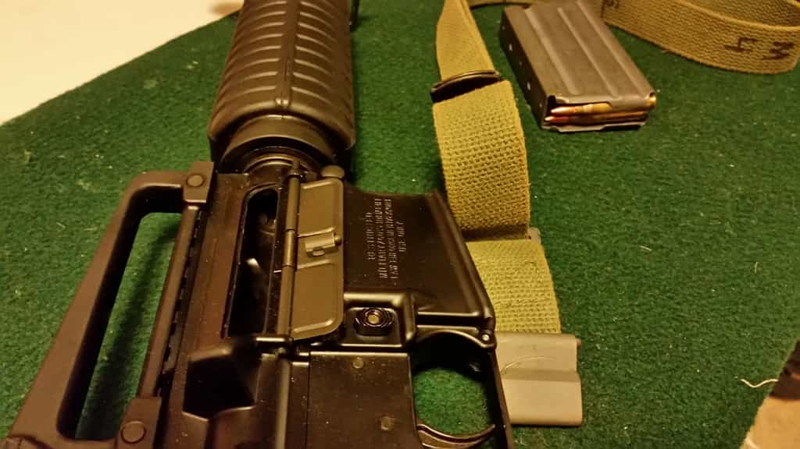
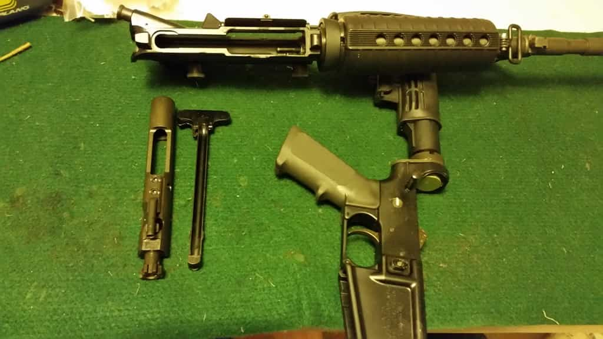

Luke Stranahan is an engineer by trade and an armed patriot by inclination. He writes for Return of Kings as a leisure pursuit and an attempt to do his part to help reverse the slide into moral decrepitude of modern society. Follow him on Twitter.


A man must own his tools, or they’ll own him. The two enemies of firearms are rust and politicians, and we’ve had enough of gun politics lately, so we’ll deal with preventing rust. The way to keep rust and other bad situations from befouling your guns is to keep them clean, dry, and lubricated. Today we’ll talk about basic rifle cleaning practices with a special guest: you love it, they hate it, give it up for the AR-15.
The first and foremost thing about firearms is always safety, and the first rule is always point the muzzle in a safe direction. I never look down the barrel of a gun unless it’s disassembled or I am physically holding the action open, so there will be no muzzle shots today.

The second rule being always treating firearms like they are loaded, we will unload the rifle from the condition in the title picture and take off the sling, being the only accessory.
The most important thing to clean in a rifle is the rifling in the barrel and the firing chamber, including the bolt face. For semi-automatic rifles, especially direct impingement rifles like a classic AR, you need to get everywhere combustion gas goes to clean that up as well. Equally, if not more important than being clean is being lubricated and free of moisture, so you need to oil and grease there, too.
Firstly, you want to get the bolt out of the rifle so you can have access to it, the receiver, and the breech end of the barrel. It’s really hard to clean a rifle well without getting the bolt out. For an AR, you pull the two captive disassembly pins, drop out the lower receiver, and pull the bolt out with the charging handle.

I’ll have a more detailed article on the AR and its features and component parts soon, but let’s focus on the general technique here.
You’re going to need three liquids to clean a gun, and some cleaning utensils. You can get a good set of brushes and rods and such going for under a hundred bucks that will last you forever, and the basics will run you twenty or so total.
First you’ll need solvent to dissolve the grime. Some people like harsh stuff, I like a milder solvent like Hoppe’s, and I do have their copper solvent if needed. Solvent takes some time on bad grime and fouling, sometimes you may need to let it sit. You’ll need oil for lubrication and rust prevention, and grease for lube on high friction points that you want to stay lubed (oil travels, grease doesn’t.) I like a higher viscosity oil, a lot of guys will swear by better car oils, and some use actual axle grease for grease. I like the oil in the picture, and I like a monolithic grease like RIG, as opposed to a suspended grease like white lithium.
Nylon toothbrush, otis cable with slotted tip, a jag, some patches, a Hoppe’s Bore Snake in .22, a bore light, Hoppe’s 9 solvent, and Shooter’s Choice FP-10 oil.
A variety of patches helps, a nylon toothbrush helps as well. Get a three pack of nylon, copper, and steel toothbrushes and toss the steel one. Copper or brass brushes can be used safely on guns, steel is too hard and only for extreme problems. A cheap ass bore light is nice, too.
You have some choices when it comes to rods. The best rods are one piece and either not steel at all, or coated steel. You are trying to avoid gouging your barrel bore here. I like the OTIS cable seen in the pictures as well, as it allows you to pull a brush through, then thread it in again without taking the brush off.
Top down: TICO Tool (for shotguns), 3 piece shotgun rod with shotgun slotted tip, 3 piece shotgun rod with O-ringed 12 gauge jag, 1 piece steel rifle rod, 3 piece steel rifle rod, and lastly a carbon fiber rifle rod. OTIS cable to the side.
Tips for cleaning have different purposes. The slotted tip is for dragging a soaked (either with solvent or oil) patch through the bore. The jag is for pushing a patch through the bore hard up against it to either sop up the extra solvent and grime, or really work some bore polish in there.
Bore brush to left, jag in middle, slotted tip to right with solvent soaked patch.
The brush is for PULLING through ALWAYS starting from the BREECH end and out the MUZZLE end to dislodge heavy fouling. Never push a brush, and never put it in at the muzzle, you can damage the crown that way. if you have a rifle that you cannot run a rod from the breech end, use a muzzle crown protector, ease the bare rod down the bore, connect the brush inside the receiver and pull it out.
Always rod a gun from the breech end whenever possible.
Start by running a soaked solvent patch down the barrel and then let it sit while you clean other things. If you happen to be some crazy Russian ammo enthusiast and like shooting cheap shit down your rifle, then you need to deal with the problem of corrosive primers. I limit my corrosive ammo to my cheap and inaccurate Chinese SKS, and my even cheaper and less accurate Mosin Nagant. Get some ammonia based window cleaner like Windex, put the gun muzzle down, insert the nozzle in the firing chamber, and liberally hose that thing down until a whole bunch has gone out the muzzle, safely washing away the corrosive salts. Continue with the solvent patch as noted above.
Take your rifle’s action down to component parts, like the firing pin and such, and swab them clean with solvent patches. The AR is an easily stripped rifle. Be aware that some rifles are a pain in the ass, and some also loosen up the more you take them apart. Know when enough disassembly is enough, and know what level of cleaning you’re doing (storage over the winter, or will be shooting it next month) and take it to the right level.
The AR bolt strips fairly easily, so I usually take mine down to this level. Other guns require acts of Congress to get this far, so act accordingly.
Once you’ve cleaned all parts of the rifle, return your attention to the barrel. It may need some brushing, so pull the copper brush through a number of times, then run another solvent patch. You will notice that most grime will go away. Once satisfied, run dry patches through it to absorb everything until they come out as clean as you care to go for, then run an oiled patch down the bore to prevent rust.
You should have a pile of dirty patches when done. Let them dry out, then toss them.
The amount of oil and grease you want places depends on your use of the gun, how much you like the gun, and your personal preferences. I oil the holy hell out of my safe queens, less on my carry guns, and my crap guns are lucky to get any. You don’t want to POUR oil down the bore, you just want it lubed, not dripping. Liquids in the bore actually blocking the bore will hydrolock the gun upon firing and blow it and you up.
Oil does two things, lubrication and rust prevention. Grease will also protect against rust, but is a little messier. There is also wax, like car wax, for when you want to preserve a gun and not shoot it. Oil should go everywhere there is metal for rust prevention. Friction points with moving and sliding metal should also get hit for lubrication. I like to use grease on the hardest hit points, the hammer, the bolt rails and lugs, and the magazine catches.
Oil on the bolt lugs and their recesses in the barrel, and on the bolt cam as well. There are two holes on the other side of the bolt for oil as well. Hit the receiver rails inside the rifle, as well as a general coat around the inside, and get under the gas tube better than I did.
After you shoot and get to know your gun, shiny wear spots will show up places, and that is where the gun will want the grease. A little dab will do.
Once you have the inside all cleaned and lubed, button the rifle up and do a function check. Make sure it dry fires, the safety works, and a mag will chamber (use an unloaded one). I like to leave all my centerfires with the hammer down to save the springs, so I’ll dry fire it and leave it uncocked.
Wipe down all outside metal surfaces to get all the fingerprints off, and put it in the case or the safe. I don’t think you should store a gun in a soft case, and a safe or cabinet is preferable to a hard case. Locking the gun up is good for safety, but, for air circulation, there’s no problem with leaning it up in the corner of the closet, either.
Gun care is something you should absolutely practice. It’s ok to leave a gun dirty for a while, as long as it is dry, especially if you plan to shoot it again soon. But, at some point, the gun needs to be cleaned back to its original condition, and then properly stored. Remember to check on it every few months, run a new oily patch down the barrel, and check to make sure the action is still lubed, and also do this if you’re taking it shooting and it’s been a while since its last trip. Be safe.
Cleaned and lubed.
Read More: 3 Things Cosmo Gets Wrong About Relationships With Men Who Own Guns.